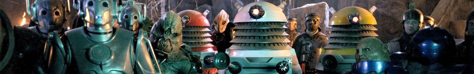

|  | |||||||
|
DaleksDaleks were the armoured, mutated descendants of the Kaleds of the planet Skaro. They fought the Time Lords in the Last Great Time War, ending in the near-total destruction of both races. The Daleks were hated and feared throughout time and space. They were the oldest and most frequent foes of the Doctor, having faced him several times in every one of his incarnations.The Daleks were conceived by science-fiction writer Terry Nation and first appeared in the 1963 Doctor Who serial The Daleks, in the shells designed by Raymond Cusick. Although the Daleks looked entirely robotic, they were in fact cybernetic organisms or cyborgs, with a biological body encased in and supported by a protective outer shell of Dalekanium metal armour, armed and mobile. These were actually the Mark III travel machines designed to carry their mutant forms, and they were not true integrated biomechanoids. In this respect, they were somewhat similar to a Cyberman; unlike them, however, the Daleks' bodies had mutated so drastically from their Kaled ancestors they had lost all humanoid appearance, save for one eye. The Daleks shared information using a sort of artificial telepathic network known as the Pathweb. The Dalek casing, originally called a "Mark III travel machine", could be separated into three sections. |
||||||